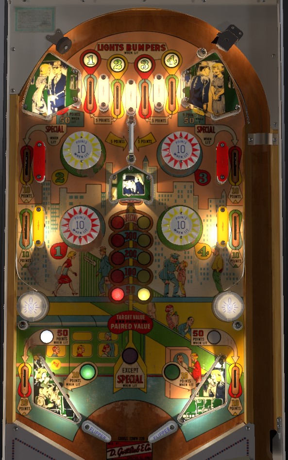

Cross Town is the replay version. Subway is the add-a-ball version.
Cross Town: Always plunge for a lit top lane to earn a number you don't have yet. Collecting a number lights a bumper for 10 points for the rest of the game. Hitting a red or yellow button advances the red or yellow light up the scale in the center of the playfield. If the lights are at the same level, the center standup target scores 50, 100, 200, 300, or Special; otherwise, the center target scores 10 points. Collecting all 4 numbers occasionally lights the upper side rollover lanes for a special as well. Special is worth no points in competition/novelty play. If the center target is lit for more than 10 points, shoot for it; otherwise, angle your way back to the top of the table to take advantage of 10-point bumpers and hope that the red and yellow lights are aligned when the ball gets back to the flippers.
Subway: Still always plunge for lit top lanes. Lighting a bumper for 10 points also lights the nearby upper side lane for 100 points instead of 10; side lanes are never lit for anything else. The center target always scores 100 points, and also gives an extra ball if bumper hits cause the red and yellow lights to align. General strategy should still be to shoot the center target if the red and yellow lights match, and otherwise go to the top of the table- but try to nudge your way into getting lit upper side lanes as well as just 10-point bumpers.
In both versions of the game, points from the center swinging gate (5 on Cross Town, 50 on Subway), upper standup targets (always 50 on Subway, alternately lit for 5 or 50 on Cross Town), and out lanes (5/50 when lit on Cross Town, 10/100 when lit on Subway) are largely negligible. There is no end of ball bonus. Tilt ends game on Cross Town, and tilt penalty is the ball in play plus 1 additional ball on Subway.
The below picture is of Cross Town, which was taken from the VPX recreation by Scottacus.
